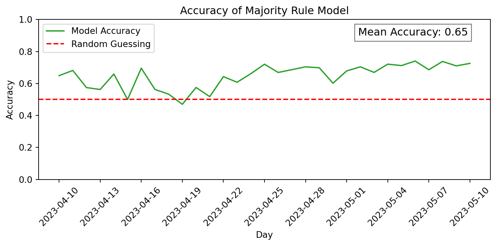

# Imports
import json
import random
from collections import Counter
import matplotlib.pyplot as plt
from bsky_net import BskyNetbsky-net Demo: Validating a Majority Rule Model
This is a rough, elementary example walkthrough. I still need to work on the accuracy of the expressed belief classifications, and the dataset currently excludes replies, quotes, and non-English posts. So think of this as more of an explanation of the process than results to interpret.
Belief classification improvement will be a continuous process.
Data overview
bsky-net is a dataset, and that dataset is just one big json file. The json file is broken up by time steps (days), and it describes each user’s activity during that time step: posts they created, “saw”, and liked. All of the activity is tagged with belief labels, when possible.
“Saw” is used very loosely here; currently, “saw” is a list of every post created that day by an account that user followed on that day. This means that many posts marked as “seen” weren’t actually seen by that user.
The accuracy of the “seen” list can/will be improved, using information like that user’s activity on that day.
Toy example
Here’s a toy example of the data structure (explanation below):
{
"2023-01-01": {
"did:plc:ragtjsm2j2vknwkz3zp4oxrd": {
"posted": {
"at://did:plc:ragtjsm2j2vknwkz3zp4oxrd/app.bsky.feed.post/3jpvaoui4dk2g": {
"text": "$13M and not a clear use of funds or trust and safety prioritization, fuck me. I know and have so many founders who would kill for this and could never get it.",
"createdAt": "2023-01-01T03:34:48.600Z",
"labels": [
["moderation", "against"]
]
},
"at://did:plc:ragtjsm2j2vknwkz3zp4oxrd/app.bsky.feed.post/3jpvbxavpp22u": {
"text": "I want to go to a library of scents. Smells trigger memories so well, more than any museum can.",
"createdAt": "2023-01-01T07:34:30.802Z",
"labels": []
}
},
"seen": {},
"liked": {}
},
"did:plc:o5tqfvsr5qwofe3icp7a6z6j": {
"posted": {
"at://did:plc:o5tqfvsr5qwofe3icp7a6z6j/app.bsky.feed.post/3jpymqtz2zt24": {
"text": ".zip is Google's experiment to make more money",
"createdAt": "2023-01-01T06:04:52.037Z",
"labels": []
}
},
"seen": {
"at://did:plc:ragtjsm2j2vknwkz3zp4oxrd/app.bsky.feed.post/3jpvaoui4dk2g": {
"createdAt": "2023-01-01T03:34:48.600Z",
"labels": [
["moderation", "against"]
]
},
"at://did:plc:ragtjsm2j2vknwkz3zp4oxrd/app.bsky.feed.post/3jpvbxavpp22u": {
"createdAt": "2023-01-01T07:34:30.802Z",
"labels": []
}
},
"liked": {
"at://did:plc:ragtjsm2j2vknwkz3zp4oxrd/app.bsky.feed.post/3jpvaoui4dk2g": {
"createdAt": "2023-01-01T03:34:48.600Z",
"labels": [
["moderation", "against"]
]
}
}
}
}
}On Jan 1, 2023, there were two users with activity: did:plc:ragtjsm2j2vknwkz3zp4oxrd and did:plc:o5tqfvsr5qwofe3icp7a6z6j (these are their “DIDs”, or user IDs). We’ll call them User A and User B, respectively, for brevity.
On Jan 1, 2023, User A created 2 posts: at://did:plc:ragtjsm2j2vknwkz3zp4oxrd/app.bsky.feed.post/3jpvaoui4dk2g and at://did:plc:ragtjsm2j2vknwkz3zp4oxrd/app.bsky.feed.post/3jpvbxavpp22u (these are their “URIs”, or post IDs). Based on the text of the posts, one of them was labeled with the “moderation” topic and expressed the belief “against” towards that topic. None of the accounts User A followed posted on Jan 1, so their “seen” and “liked” objects are both empty.
User B created 1 post, which had no topic/belief labels. However, User B was a follower of User A, so their “seen” object includes the 2 posts from User A. Also, User B liked one of User A’s posts, so their “liked” obect includes that post as well.
The data structure includes a lot of duplicate data, which just makes simulation easier.
Code
Below, I’ll be using a helper class, BskyNet, to parse the (quite large) bsky-net json file. All it’s really doing is helping me iterate over the data structure.
bsky_net = BskyNet("../data/processed/bsky-net-daily")
time_steps = bsky_net.time_steps
print(time_steps)['2022-11-17', '2022-11-18', '2022-11-19', '2022-11-20', '2022-11-21', '2022-11-22', '2022-11-23', '2022-11-24', '2022-11-25', '2022-11-26', '2022-11-27', '2022-11-28', '2022-11-29', '2022-11-30', '2022-12-01', '2022-12-02', '2022-12-03', '2022-12-04', '2022-12-05', '2022-12-06', '2022-12-07', '2022-12-08', '2022-12-09', '2022-12-10', '2022-12-11', '2022-12-12', '2022-12-13', '2022-12-14', '2022-12-15', '2022-12-16', '2022-12-17', '2022-12-18', '2022-12-19', '2022-12-20', '2022-12-21', '2022-12-22', '2022-12-23', '2022-12-24', '2022-12-25', '2022-12-26', '2022-12-27', '2022-12-28', '2022-12-29', '2022-12-30', '2022-12-31', '2023-01-01', '2023-01-02', '2023-01-03', '2023-01-04', '2023-01-05', '2023-01-06', '2023-01-07', '2023-01-08', '2023-01-09', '2023-01-10', '2023-01-11', '2023-01-12', '2023-01-13', '2023-01-14', '2023-01-15', '2023-01-16', '2023-01-17', '2023-01-18', '2023-01-19', '2023-01-20', '2023-01-21', '2023-01-22', '2023-01-23', '2023-01-24', '2023-01-25', '2023-01-26', '2023-01-27', '2023-01-28', '2023-01-29', '2023-01-30', '2023-01-31', '2023-02-01', '2023-02-02', '2023-02-03', '2023-02-04', '2023-02-05', '2023-02-06', '2023-02-07', '2023-02-08', '2023-02-09', '2023-02-10', '2023-02-11', '2023-02-12', '2023-02-13', '2023-02-14', '2023-02-15', '2023-02-16', '2023-02-17', '2023-02-18', '2023-02-19', '2023-02-20', '2023-02-21', '2023-02-22', '2023-02-23', '2023-02-24', '2023-02-25', '2023-02-26', '2023-02-27', '2023-02-28', '2023-03-01', '2023-03-02', '2023-03-03', '2023-03-04', '2023-03-05', '2023-03-06', '2023-03-07', '2023-03-08', '2023-03-09', '2023-03-10', '2023-03-11', '2023-03-12', '2023-03-13', '2023-03-14', '2023-03-15', '2023-03-16', '2023-03-17', '2023-03-18', '2023-03-19', '2023-03-20', '2023-03-21', '2023-03-22', '2023-03-23', '2023-03-24', '2023-03-25', '2023-03-26', '2023-03-27', '2023-03-28', '2023-03-29', '2023-03-30', '2023-03-31', '2023-04-01', '2023-04-02', '2023-04-03', '2023-04-04', '2023-04-05', '2023-04-06', '2023-04-07', '2023-04-08', '2023-04-09', '2023-04-10', '2023-04-11', '2023-04-12', '2023-04-13', '2023-04-14', '2023-04-15', '2023-04-16', '2023-04-17', '2023-04-18', '2023-04-19', '2023-04-20', '2023-04-21', '2023-04-22', '2023-04-23', '2023-04-24', '2023-04-25', '2023-04-26', '2023-04-27', '2023-04-28', '2023-04-29', '2023-04-30', '2023-05-01', '2023-05-02', '2023-05-03', '2023-05-04', '2023-05-05', '2023-05-06', '2023-05-07', '2023-05-08', '2023-05-09', '2023-05-10']As seen in bsky_net.time_steps, the dataset currently includes all activities on Bluesky up to May 7, 2023.
To iterate over each time step, we’ll use bsky_net.simulate():
for step, active_users in bsky_net.simulate(verbose=False):
print(f"{time_steps[step]} ({len(active_users)} active users)\n")
break2022-11-17 (8 active users)
Simulating a Model
Now, we’re going to use the dataset to simulate a belief dynamics model.
Model definition
For this example, we use the classic majority rule, which is defined as follows:
def majority_rule(beliefs: list[str], current_belief: str) -> str:
"""Calculate the majority belief from a list of expressed beliefs."""
counts = Counter(beliefs)
if counts["favor"] > counts["against"]:
return "favor"
elif counts["against"] > counts["favor"]:
return "against"
else:
return current_beliefBelief updating
For each time step:
- New users to the network are initialized with a random belief
- If a user has observed posts this time step, their belief is updated according to the majority rule, using that user’s observed posts as “edges”
- If a user observed no posts, or no posts with expressed beliefs, their belief is assumed to stay the same
- Their new belief as predicted by the model is compared against their actual activity during that same time step, if possible
- Below, I simply compare the user’s predicted belief with the majority of beliefs expressed in their posts during that time stamp. This is a very small \(n\) size per time step, though, and can be improved
# Initialize belief log (for plotting)
belief_history = {
"favor": [0] * len(bsky_net.time_steps),
"against": [0] * len(bsky_net.time_steps),
}
# Initialize accuracy log (for plotting)
model_accuracy = {
"correct": [0] * len(bsky_net.time_steps),
"total": [0] * len(bsky_net.time_steps),
}
# Track belief states
internal_beliefs: dict[str, str] = {}
# Iterate over each time step
for step, active_users in bsky_net.simulate(verbose=False):
# Initialize new users with random beliefs
new_users = set(active_users) - set(internal_beliefs.keys())
for user_id in new_users:
internal_beliefs[user_id] = random.choice(["favor", "against"])
# Iterate over all current users
for did in internal_beliefs:
# If user doesn't have activity, don't update belief
if did not in active_users:
belief_history[internal_beliefs[did]][step] += 1 # logging
continue
# ==== UPDATING BELIEFS ====
# Get user's activity during time step -- posts observed, created, liked
activity = active_users[did]
# Get beliefs observed by user (posted by neighbors)
observed_moderation_beliefs = bsky_net.get_beliefs(
topic="moderation", records=activity["seen"]
)
# User observed no beliefs -- don't update
if not observed_moderation_beliefs:
belief_history[internal_beliefs[did]][step] += 1 # logging
continue
# Get user's current internal belief
current_belief = internal_beliefs[did]
# Update user's current internal belief using majority rule
new_belief = majority_rule(observed_moderation_beliefs, current_belief)
# Update belief state
internal_beliefs[did] = new_belief
belief_history[internal_beliefs[did]][step] += 1 # logging
# ==== VALIDATING BELIEFS (when possible) ====
# Get beliefs expressed by user: "ground truth"
expressed_moderation_beliefs: list[str] = bsky_net.get_beliefs(
topic="moderation", records=activity["posted"]
)
# Check predicted belief against "ground truth" expressed belief, if possible
if expressed_moderation_beliefs:
# Use majority of expressed beliefs that time step as "ground truth"
true_belief = majority_rule(expressed_moderation_beliefs, current_belief)
correct = new_belief == true_belief
# Log for plotting
model_accuracy["correct"][step] += correct
model_accuracy["total"][step] += 1
print(
f"Breakdown of beliefs at t={time_steps[-1]}: {json.dumps(Counter(internal_beliefs.values()), indent=2)}"
)Breakdown of beliefs at t=2023-05-10: {
"favor": 24729,
"against": 30107
}Plotting
I truncated the data prior to April 10 for the plots because of how little data there was.
Show the code
start_day = "2023-04-10"
start_idx = bsky_net.time_steps.index(start_day)
time_steps_trunc = bsky_net.time_steps[start_idx:]
model_accuracy["correct"] = model_accuracy["correct"][start_idx:]
model_accuracy["total"] = model_accuracy["total"][start_idx:]
belief_history["favor"] = belief_history["favor"][start_idx:]
belief_history["against"] = belief_history["against"][start_idx:]
fix, ax = plt.subplots(figsize=(8, 4))
total_opinions = [
n_favor + n_against
for n_favor, n_against in zip(belief_history["favor"], belief_history["against"])
]
history_norm = {
"favor": [
count / total_opinions[idx] if total_opinions[idx] != 0 else 0
for idx, count in enumerate(belief_history["favor"])
],
"against": [
count / total_opinions[idx] if total_opinions[idx] != 0 else 0
for idx, count in enumerate(belief_history["against"])
],
}
# Plot accuracy of belief model in predicting expressed beliefs
ax.plot(time_steps_trunc, history_norm["favor"], label="favor", color="tab:blue")
ax.plot(time_steps_trunc, history_norm["against"], label="against", color="tab:red")
ax.set_xlabel("Day")
ax.set_ylabel("Percentage")
ax.set_title("Moderation Opinion Distribution (per Majority Rule Model)")
ax.legend()
ax.set_ylim(0, 1)
ax.set_xticks(time_steps_trunc[::3])
ax.tick_params(axis="x", rotation=45)
plt.tight_layout()
plt.show()Show the code
fix, ax = plt.subplots(figsize=(8, 4))
accuracy = [
n_correct / model_accuracy["total"][i] if model_accuracy["total"][i] else 0
for i, n_correct in enumerate(model_accuracy["correct"])
]
# Plot accuracy of belief model in predicting expressed beliefs
ax.plot(time_steps_trunc, accuracy, color="tab:green", label="Model Accuracy")
ax.axhline(y=0.5, color="red", linestyle="--", label="Random Guessing")
ax.set_xlabel("Day")
ax.set_ylabel("Accuracy")
ax.set_title("Accuracy of Majority Rule Model")
ax.legend()
ax.set_ylim(0, 1)
ax.set_xticks(time_steps_trunc[::3])
ax.tick_params(axis="x", rotation=45)
ax.text(
0.95,
0.95,
f"Mean Accuracy: {(sum(accuracy) / len(accuracy)):.2f}",
transform=ax.transAxes,
fontsize=12,
verticalalignment="top",
horizontalalignment="right",
bbox=dict(facecolor="white", alpha=0.5),
)
plt.tight_layout()
plt.show()